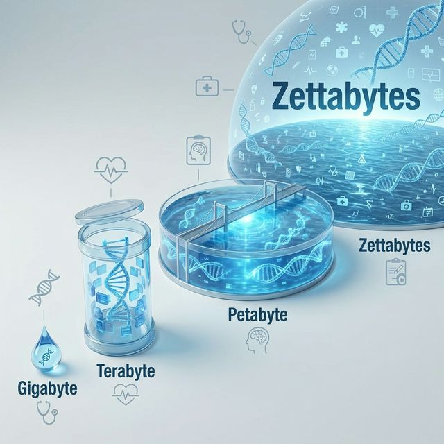
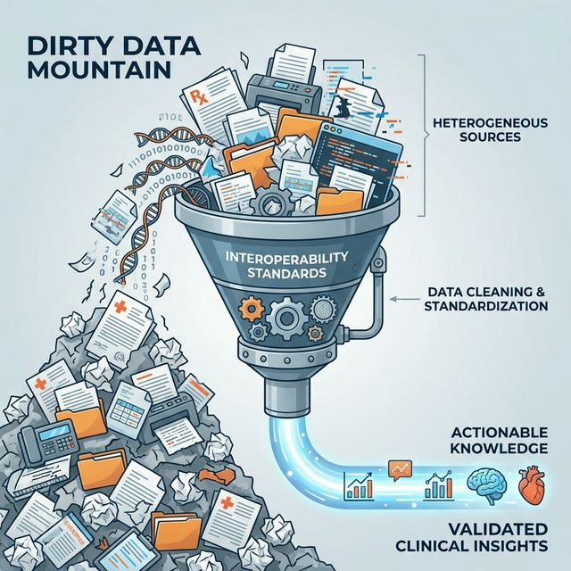
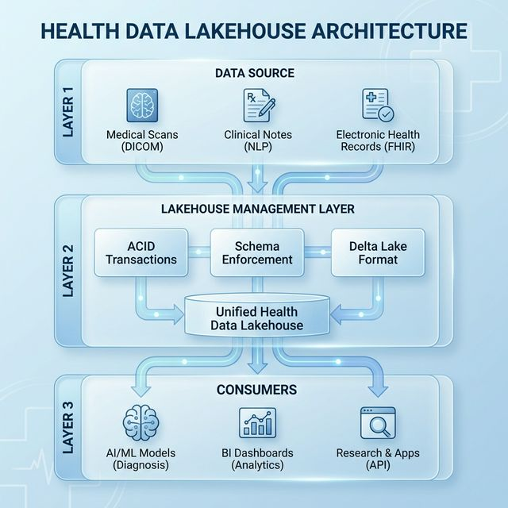
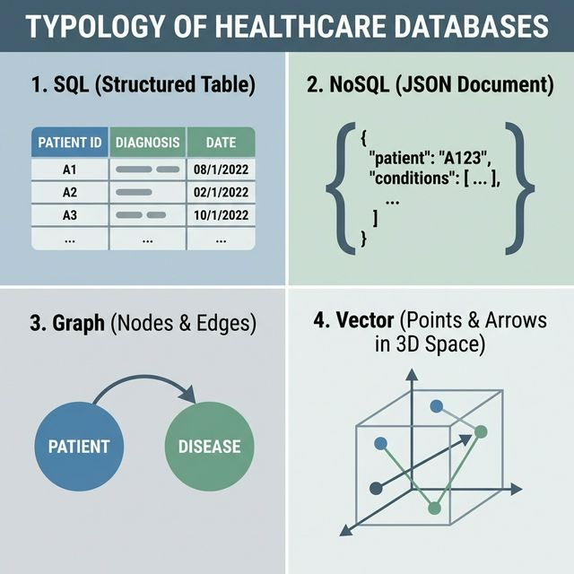
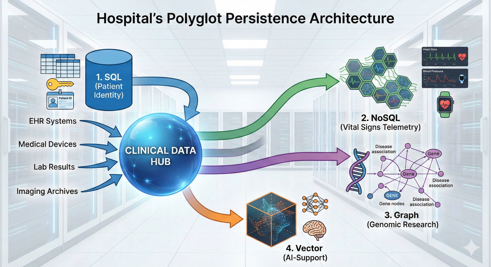
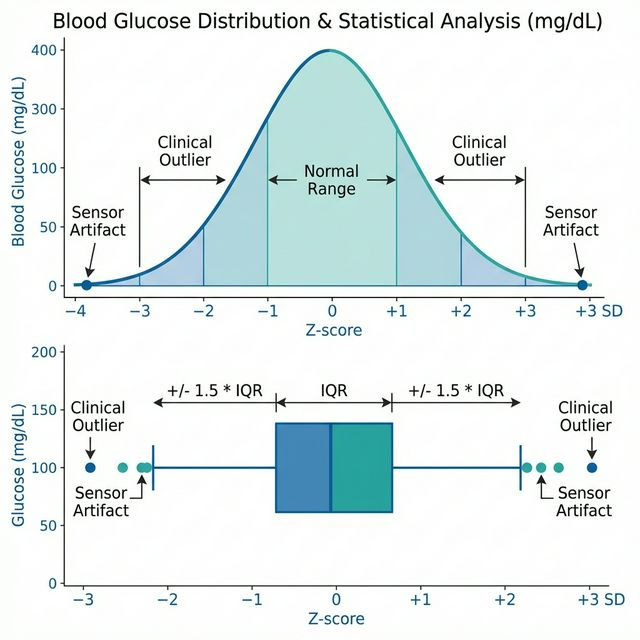
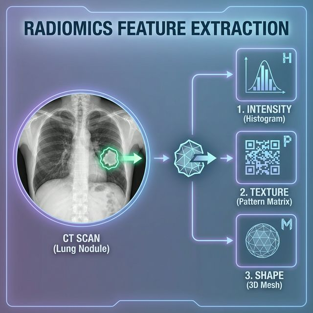

graph TD
A[Medicina<br/>Artesanal] -->|Digitalización| B(EHR<br/>Silos de Datos)
B -->|Transformación| C(Ecosistema<br/>Inteligente)
style C fill:#b3e5fc,stroke:#0288d1,stroke-width:2px
Hospital Universitari Arnau de Vilanova
Universitat de Lleida
16 febrero, 2026
METAMORFOSIS DIGITAL
La industria de la salud está experimentando una transformación sin precedentes, impulsada por una explosión en la generación de datos que redefine la práctica médica, la investigación y la gestión sanitaria.
Entender este ecosistema no es solo cuestión de tecnología, sino de comprender cómo la información fluye, se almacena y se transforma en valor clínico.
graph TD
A[Medicina<br/>Artesanal] -->|Digitalización| B(EHR<br/>Silos de Datos)
B -->|Transformación| C(Ecosistema<br/>Inteligente)
style C fill:#b3e5fc,stroke:#0288d1,stroke-width:2px
Escala Masiva
Estamos pasando de la era del Gigabyte a la era del Zettabyte.

La velocidad de generación de datos crea un desafío cognitivo imposible para el ser humano.
El conocimiento médico se duplicaba cada 50 años.
El tiempo de duplicación se redujo a 3.5 años.
El conocimiento se duplica cada 73 días (How to harness health data to improve patient outcomes, fecha de acceso, 2026).
Un estudiante que inicia hoy se enfrentará a un corpus de conocimiento multiplicado varias veces antes de graduarse. El apoyo de la IA es indispensable (How to harness health data to improve patient outcomes, fecha de acceso, 2026).
Tres factores principales impulsan este crecimiento masivo:
La secuenciación de un solo genoma genera hasta 200 GB de datos crudos. Las iniciativas poblacionales convierten a la genómica en una de las fuentes más voluminosas (Lukhele, 2025).
Transición de radiografías 2D a: * CT volumétricas. * MRI funcionales. * Patología digital (GBs por imagen) (Hamlomo, 2025).
Wearables y sensores implantables generan flujos continuos de telemetría (frecuencia cardíaca, glucosa) que requieren ingestión en tiempo real (Majeed, 2023).
A pesar de la abundancia, sufrimos el síndrome DRIP.
Los “datos sucios” (incompletos, inexactos o duplicados) cuestan a la industria de EE. UU. más de $300 mil millones/año (Ghiassi, 2019).
El Síndrome DRIP
Las organizaciones están inundadas de datos, pero carecen de capacidad para extraer insights significativos debido a la mala calidad y la falta de estandarización (Strategies to Overcome Data Rich, Information Poor (DRIP) Syndrome in Neonatology, 2026).

La solución a los “silos” reside en estándares globales de comunicación.
Utiliza tecnologías web modernas (API RESTful, JSON) para permitir que sistemas dispares hablen el mismo idioma (Bodenreider, 2018). * Ejemplo: Una app de diabetes envía glucosa al registro del hospital (Ohlsen, 2024).
Estándar universal para manejo, almacenamiento e impresión de imágenes médicas (DICOM Standard, fecha de acceso, 2026). * Garantiza que una resonancia de un equipo Siemens se vea en una estación GE.
Estandarizan el significado clínico: * LOINC: Códigos de laboratorio (ej. Hemoglobina). * SNOMED CT: Diagnósticos y hallazgos clínicos con estructura ontológica (Bodenreider, 2018).
Una advertencia histórica sobre expectativas vs. realidad.
IBM Watson for Oncology invirtió $62 millones pero no logró integrarse rutinariamente en la clínica (2026).
Caja Negra
Los médicos desconfiaban de recomendaciones donde la IA no podía explicar su razonamiento (Why IBM Watson for Oncology Failed | by Dr. Varun Gupta, 2026).
La “Biblioteca” de Datos: Ordenada, Catalogada y Rígida.
Limitación
No soporta datos no estructurados (imágenes, texto libre) vitales para la IA moderna.
graph TD
A[Fuentes<br/>Operacionales] -->|ETL| B[(Data<br/>Warehouse)]
B --> C[Reportes<br/>BI]
style B fill:#fff9c4,stroke:#fbc02d,stroke-width:2px
El “Desguace” de Datos: Flexible, Masivo y Caótico.
Riesgo: Data Swamp
Sin gobernanza, se convierte en un pantano de datos inútiles e inencontrables.
graph TD
A[Logs] --> D((Data<br/>Lake))
B[Imágenes] --> D
C[IoT] --> D
D -.-> E[Ciencia<br/>de Datos]
style D fill:#e1f5fe,stroke:#01579b,stroke-dasharray: 5 5
Superando las limitaciones del Data Warehouse y el Data Lake tradicionales.
El Lakehouse combina lo mejor de dos mundos:

| Característica | Data Warehouse | Data Lake | Data Lakehouse |
|---|---|---|---|
| Tipo de Datos | Estructurados (SQL) | Todos (Estructurados + No estruc.) | Todos |
| Costo Almacenamiento | Alto | Bajo | Bajo |
| Calidad de Datos | Alta (Curada) | Baja (Cruda) | Alta (Curada y validada) |
| Usuarios | Analistas de Negocio | Científicos de Datos | Ambos |
| Soporte IA/ML | Limitado | Nativo | Nativo y Optimizado |
VISIÓN 360°
La arquitectura Data Lakehouse es el cimiento de los futuros sistemas de salud cognitiva.
Permite integrar clínica, genómica y determinantes sociales en una visión unificada, eliminando duplicidades y habilitando la predicción avanzada.
La medicina contemporánea ha trascendido el acto clínico físico para convertirse en una disciplina impulsada por la información.
Gestionar una tipología heterogénea que abarca desde registros numéricos discretos hasta complejas señales bioeléctricas y narrativas clínicas ambiguas.
La clasificación fundamental de los datos en salud se divide entre estructurados y no estructurados.
80%
De la información clínica se genera en formato no estructurado (Kong, 2019).
Notas de evolución • Resúmenes de alta • Informes de radiología • Anatomía patológica
| Característica | Datos Estructurados | Datos No Estructurados |
|---|---|---|
| Formato | Campos predefinidos, tablas relacionales | Texto libre, imágenes, señales, video |
| Almacenamiento | Bases de datos SQL | Almacenes de objetos, sistemas de archivos |
| Análisis | Estadístico directo, SQL | NLP, Visión por computador, Deep Learning |
| Volumen | Relativamente bajo, crecimiento lineal | Masivo (80%), crecimiento exponencial (Unknown, 2024) |
| Valor Clínico | Cuantitativo, tendencias claras | Contexto narrativo, razonamiento médico |
La transformación de texto libre en datos accionables requiere superar la ambigüedad lingüística.
Pipelines modernos de NLP deben realizar:
Caso de Éxito: Sistemas como Leo alcanzan una precisión >0.90 en la extracción de clasificación TNM (Tumor, Nódulo, Metástasis) de informes de patología (Miller et al., 2021).
DICOM es más que un formato; es un protocolo que garantiza que la imagen nunca se separe de la información del paciente (Quesque, 2024).
Cada elemento usa un Tag (ej. 0010,0010) y una VR (Representación de Valor) que puede ser explícita o implícita (Overview, 2026).
Organización lógica en los sistemas PACS (Understanding DICOM | Towards Data Science, fecha de acceso, 2026):
La entidad biológica que recibe la atención.
Un procedimiento específico (ej. TAC Abdomen) en una fecha dada.
Subconjunto del estudio (ej. fase arterial vs. venosa).
La imagen individual o “slice” del volumen.
Riesgo de Privacidad (PHI): La riqueza de metadatos facilita fugas de privacidad. Se requieren procesos de de-identificación según DICOM PS 3 Anexo E (Imaging Data 101 | UCSF Radiology, fecha de acceso, 2026).
Fenómenos dinámicos (ECG, EEG, EMG) que requieren alta frecuencia de muestreo.
| Formato | Bits | Uso Principal |
|---|---|---|
| EDF | 16 | Sueño, EEG clínico (Estándar de oro) |
| BDF | 24 | Investigación, alto rango dinámico |
| MFER | Var. | Ondas médicas generales |
Nota: BDF reduce la necesidad de amplificación analógica excesiva (Huang & Shen, 2024).
La interoperabilidad semántica se logra vinculando elementos a terminologías como SNOMED CT o LOINC.
| Operación | Verbo HTTP | URI Ejemplo | Acción |
|---|---|---|---|
| Leer | GET |
/Patient/123 |
Recuperar recurso |
| Buscar | GET |
/Observation?patient=123 |
Listar observaciones |
| Crear | POST |
/Observation |
Nueva observación |
| Actualizar | PUT |
/Procedure/456 |
Modificar recurso |
La elección de la unidad de análisis define la validez de la investigación (Patient and Encounter Level Filter Mode – DataDirect User Guide, fecha de acceso, 2026).
Importante: Confundir “pacientes” con “encuentros” introduce sesgos graves en análisis de utilización de recursos hospitalarios (Bentley et al., 2012).
La genómica añade una capa de complejidad longitudinal y masiva. FHIR reutiliza recursos existentes para facilitar la adopción (Stellmach, 2023).
DiagnosticReport: Contenedor del informe genético.Observation: Variantes específicas o interpretación clínica.MolecularSequence: Secuencia cruda de nucleótidos.Specimen: Fuente biológica (tejido, sangre).El futuro de la salud digital depende de la transición de silos aislados a ecosistemas semánticamente coherentes.
Asegurar que la IA y los sistemas de soporte a la decisión operen sobre una base de información íntegra, privada y representativa de la complejidad humana.
La evolución del EHR no es solo administrativa, es un cambio de paradigma.
Punto Crítico
La intersección entre ética, marco legal y arquitectura técnica es vital. Ya no es documentación, es una actividad regulada (RGPD) e interoperable (FHIR). (Chen, 2024)
El RGPD clasifica los datos de salud como categoría especial.
El tratamiento está prohibido por defecto, salvo excepciones: * Diagnóstico médico. * Gestión de sistemas de salud. * Interés público en salud transfronteriza. (GDPR Compliance, 2026)
Permite el uso secundario bajo garantías: * Minimización de datos. * Seudonimización. * Respeto a derechos y libertades.
flowchart TD
A("Dato de Salud") -->|"Art. 9 RGPD"| B{"¿Prohibido?"}
B -->|"Sí, por defecto"| C("STOP")
B -->|"Excepción"| D{"Finalidad"}
D -->|"Clínica/Gestión"| E("Tratamiento Lícito")
D -->|"Investigación"| F("licitud por Art. 89")
F --> G("Garantías Obligatorias:<br/>Seudonimización + Seguridad")
style A fill:#e1f5fe,stroke:#01579b,stroke-width:2px
style C fill:#ffcdd2,stroke:#b71c1c,color:#b71c1c
style E fill:#c8e6c9,stroke:#2e7d32
style G fill:#fff9c4,stroke:#fbc02d
“La privacidad no debe obstaculizar el progreso científico, pero el progreso no puede sacrificar la privacidad.”
| Característica | Seudonimización | Anonimización |
|---|---|---|
| Técnica | Sustitución de IDs por códigos. | Eliminación irreversible de vínculo. |
| Reversibilidad | Sí, con clave separada. | Imposible (teóricamente). |
| Estatus Legal | Dato Personal (RGPD). | Dato NO Personal (Fuera RGPD). |
| Uso Principal | Estudios longitudinales. | Publicación de datasets abiertos. |
| Riesgo | Re-identificación si se roba la clave. | Pérdida de utilidad analítica. |
“La anonimización reduce el riesgo, pero también reduce el valor del dato.” (What are the Differences Between Anonymisation and Pseudonymisation | Privacy Company Blog, fecha de acceso, 2026)
Los sistemas antiguos funcionaban como “silos” cerrados. HL7 FHIR es la solución.
Características de FHIR:
sequenceDiagram
participant App as App Paciente
participant Auth as OAuth2 Server
participant FHIR as API FHIR
participant EHR as Base de Datos
App->>Auth: 1. Solicita Token
Auth-->>App: 2. Access Token
App->>FHIR: 3. GET /Obs?code=123 (con Token)
FHIR->>EHR: 4. SQL Query
EHR-->>FHIR: 5. Result
FHIR-->>App: 6. FHIR JSON Resource
Comparativa de filosofías de implementación (Cerner vs Epic EMR Integration, 2026):
| Proveedor | Filosofía | Fortalezas | Desafíos |
|---|---|---|---|
| Epic Systems | Walled Garden | Rendimiento, integración académica. | Coste, rigidez. |
| Cerner (Oracle) | Open Interop | Flexibilidad, CommonWell. | Consistencia modular. |
| SAP Health | ERP Integration | Servicios nube, gestión administrativa. | Menor flujo clínico directo. |
En la era de las APIs, el perímetro físico ha muerto. Necesitamos seguridad a nivel de recurso.
ConsentUso del HL7 HCS:
HIV, SUD (Abuso de sustancias), PSY (Psiquiatría).Quitar el nombre NO es suficiente.
Cruzar datos “anónimos” con bases de datos públicas permite re-identificar. (Dolev, 2020)
Caso Gobernador William Weld (1997)
Caso Medicare Australia (2016)
Un mercado único de datos para la UE. (European Health Data Space Regulation (EHDS), fecha de acceso, 2026)
flowchart LR
ES("España<br/>NCPeH") <-->|"MyHealth@EU"| DE("Alemania<br/>NCPeH")
DE <-->|"MyHealth@EU"| FR("Francia<br/>NCPeH")
FR <-->|"MyHealth@EU"| ES
subgraph "Infraestructura Transfronteriza"
ES
DE
FR
end
style ES fill:#ce93d8,stroke:#4a148c
style DE fill:#81d4fa,stroke:#01579b
style FR fill:#a5d6a7,stroke:#1b5e20
“La informática biomédica debe proteger el secreto médico con la misma eficacia con la que explota el Big Data para salvar vidas.”
La arquitectura de la información ha evolucionado de ser soporte a ser el núcleo estratégico de la medicina de precisión y la IA.

Las bases de datos relacionales siguen siendo el estándar para HIS y EHR.
⚠️ Impacto en Seguridad del Paciente
La rigidez del esquema es una salvaguarda. Si una relación paciente-observación se rompe, el médico podría visualizar datos incorrectos. ACID impide estados ambiguos.
Aunque FHIR usa JSON/XML, su lógica es relacional.
JSONB.
| Característica | Implementación SQL |
|---|---|
| Modelo | Tablas y Tuplas rígidas (Villaverde, 2022) |
| Garantía | Cumplimiento estricto de ACID (Soumma, 2025) |
| Uso Clínico | Facturación, MPI, Admisión |
El “Big Data Clínico” (Genómica, Telemetría) desafía los esquemas rígidos.
⚠️ Precaución: Consistencia Eventual
Muchos sistemas NoSQL priorizan disponibilidad sobre consistencia inmediata. Aceptable para logs de temperatura, no para administración de dosis críticas (Asiminidis, 2018).
Tecnología: MongoDB. Uso: Notas clínicas, historiales semiestructurados. Ventaja: Ingesta de datos heterogéneos sin alterar el esquema global. Ideal para integrar diversos fabricantes de dispositivos (Villaverde, 2022).
Tecnología: Redis. Uso: Caché de alta velocidad, sesiones de usuario, alertas críticas. Ventaja: Latencia de milisegundos donde la velocidad prima sobre la relación (SQL or NoSQL? A Real Story From Building Healthcare Software ..., 2026).
Tecnología: Cassandra / HBase. Uso: Telemetría (IoT médico), logs de auditoría a largo plazo. Ventaja: Rendimiento superior (40-69%) en consultas analíticas sobre terabytes de datos históricos (Soumma, 2025).
Grafos y Descubrimiento Biomédico
Los grafos son herramientas fundamentales en la farmacogenómica, permitiendo descubrir interacciones imprevistas entre fármacos al mapear extensas redes de proteínas y patologías (Ahmed, 2020).
En un Grafo, las relaciones son “ciudadanos de primera clase”.
“Los grafos permiten descubrir interacciones imprevistas entre fármacos al mapear redes de proteínas.” (Ahmed, 2020)
Soporte para LLM y RAG.
Búsqueda por palabras clave falla ante la variabilidad léxica: * “Disnea de esfuerzo” vs “Falta de aire”.
Los Embeddings (vectores numéricos) capturan la esencia semántica. El sistema identifica que ambos conceptos están matemáticamente “cerca” (Best Vector Databases in 2025, 2025).
El Reto de la Precisión Vectorial
A diferencia de SQL, la búsqueda vectorial es aproximada. En un contexto clínico, es vital ajustar los umbrales de similitud para evitar “alucinaciones” del modelo de IA (Best Vector Databases in 2025, 2025).
1. Consulta del Médico El profesional realiza una pregunta clínica compleja en lenguaje natural.
2. Recuperación Semántica La DB Vectorial recupera guías clínicas y protocolos internos relevantes (contexto).
3. Generación Aumentada El LLM genera la respuesta basándose solo en la evidencia recuperada, reduciendo alucinaciones y citando fuentes internas (Xu, 2025).
| Motor | Tipo | Fortalezas | Limitaciones |
|---|---|---|---|
| Pinecone | SaaS | Puesta en marcha rápida, latencia <50ms. | Datos en la nube (Soberanía), Lock-in. |
| Milvus | Open Source | Escala masiva (trillones de vectores), Distribuido. | Alta complejidad operativa. |
| Weaviate | Open Source | Búsqueda Híbrida (Vectores + Filtros metadatos). | Rendimiento extremo inferior a Milvus. |
Rompiendo los silos entre PACS y EHR.
ImagingStudy en FHIR (Zeng et al., 2020).Permite investigación clínica mediante APIs REST sin acceder al binario del PACS.
Framework de 4 etapas para la veracidad en IA Biomédica (Xu, 2025):
graph TD
Q[Consulta Médica] --> A[Recuperación Multifuente]
A -->|PubMed + OMS + KG| B[Re-ranking]
B -->|Cross-Encoders| C[Evaluación SEAE]
C -->|BERTScore| D{"¿Consistente?"}
D -->|Si| E[Respuesta Verificada]
D -->|No| F[Auto-Clarificación]
F -->|Búsqueda Secundaria| A
style D fill:#f96,stroke:#333,stroke-width:2px
La gestión de identidad (IAM) y GDPR es transversal.
| Control | SQL | NoSQL | Vectorial |
|---|---|---|---|
| Cifrado | Nativo / Maduro (TDE) | Soportado (Motores líderes) | Dependiente de Infraestructura |
| Auditoría | Granular (Sentencia SQL) | Nivel Documento/Colección | Trazabilidad API / Índices |
| Aislamiento | Row-Level Security | Sharding físico | Namespaces lógicos |
Nota sobre Grafos: Facilitan auditorías GDPR al visualizar gráficamente el flujo del dato personal entre sistemas (GDPR Compliance, 2026).
No existe una “talla única”. La solución robusta es híbrida.

“El reto es la orquestación, transformando el océano de datos en conocimiento accionable.” (Villaverde, 2022)
“Si el dato crudo es el petróleo de la IA moderna, la ingeniería de características es la refinería.”
Objetivos del Capítulo 1. Limpieza de datos y EHR. 2. Manejo de Outliers. 3. Imputación de datos faltantes. 4. Sesgo y Equidad (Fairness).
Outliers: ¿Artefacto o Clínica?
Un outlier en salud puede ser un error de sensor o una emergencia médica. La decisión de eliminarlo debe basarse en el conocimiento fisiológico y no solo en criterios estadísticos rígidos.
Distinguir entre error de artefacto y patología extrema es vital (Data Preprocessing in Healthcare, 2026).

Precaución: Un outlier puede ser una emergencia médica. La eliminación debe basarse en fisiología, no solo estadística.
La Ausencia de Registro no es Normalidad
Ignorar el motivo de la falta de un dato (mecanismo MNAR) puede llevar a modelos que asumen que la falta de pruebas equivale a buena salud, introduciendo sesgos graves en la predicción de riesgos.
Entender el mecanismo de la pérdida es crucial para elegir la estrategia de imputación correcta.
En un EHR, que no haya un registro de glucosa no significa que sea normal; significa que no se midió (Feng, 2019).
Riesgo Crítico Ignorar el mecanismo MNAR introduce sesgos graves en la predicción de riesgos (Wells, 2013).
graph TD
A["Dato Faltante"] --> B{"¿Mecanismo?"}
B -->|MCAR\nAleatorio Puro| C["Seguro:\nImputar"]
B -->|MAR\nDependiente| D["Recuperable:\nCorrelacionar"]
B -->|MNAR\nNo Aleatorio| E["PELIGRO:\nSesgo Oculto"]
style E fill:#f96,stroke:#333,stroke-width:2px
| Método | Descripción | Ventajas/Desventajas | Caso de Uso |
|---|---|---|---|
| Media/Mediana | Reemplazo por promedio. | ❌ Reduce varianza, distorsiona correlaciones (Feng, 2019). | Solo variables auxiliares MCAR. |
| LOCF | Último valor conocido. | ✅ Refleja inercia fisiológica. ❌ Asume estabilidad en agudos (Amin, 2018). |
Signos vitales en UCI estable. |
| MICE | Múltiples datasets vía regresión. | ✅ Captura incertidumbre. ❌ Costoso computacionalmente (Fathima, 2023). |
Epidemiología compleja. |
| KNN | Promedio de pacientes similares. | ✅ No asume distribución lineal. ❌ Lento en Big Data (Chan, 2025). |
Datos de laboratorio. |
| GAIN | Imputación vía GANs. | ✅ Estado del arte, preserva distribución (Erman, 2025). | Datasets masivos Deep Learning. |
flowchart LR
Start["Inicio"] --> Check{"¿Tipo de Ausencia?"}
Check -->|MCAR/MAR| Series{"¿Serie Temporal?"}
Check -->|MNAR| Expert["Consultar Experto\nModelado Específico"]
Series -->|Si| LOCF["LOCF / Interpolación"]
Series -->|No| Multi{"¿Complejidad?"}
Multi -->|Baja| Simple["Media/Mediana\n(Riesgo Varianza)"]
Multi -->|Media| MICE["MICE\n(Regresión Encadenada)"]
Multi -->|Alta| GAIN["Deep Learning\n(GAIN/Autoencoders)"]
Transformando imágenes en datos cuantitativos invisibles al ojo humano (Gillies, 2016).
1er Orden Histograma de intensidades. (Media, asimetría, curtosis del tumor)
Textura (2º Orden) GLCM. Mide homogeneidad. Diferencia tumores benignos de malignos (Vujasinovic, 2015).
Forma Compacidad, esfericidad y volumen fractal.

Figura 4: Proceso de extracción radiómica: transformando imágenes en características cuantitativas de textura y forma.
Automatización de la Discriminación Histórica
Si un dataset refleja discriminación histórica (ej. menor gasto en minorías), el modelo aprenderá a infravalorar la necesidad médica de esos grupos si el costo se usa como proxy de salud (Obermeyer et al., 2019).
El preprocesamiento es donde se introducen o amplifican los sesgos sociales (Algorithmic Bias in Health Care, 2026).
El Caso Obermeyer (Science, 2019) Un algoritmo infravaloraba a pacientes negros porque, a igual gravedad, gastaban menos dinero debido a barreras de acceso. Solución: Cambiar etiqueta objetivo de “costo” a “biomarcadores” (Obermeyer et al., 2019).
INGENIERÍA DE CARACTERÍSTICAS = TRADUCCIÓN